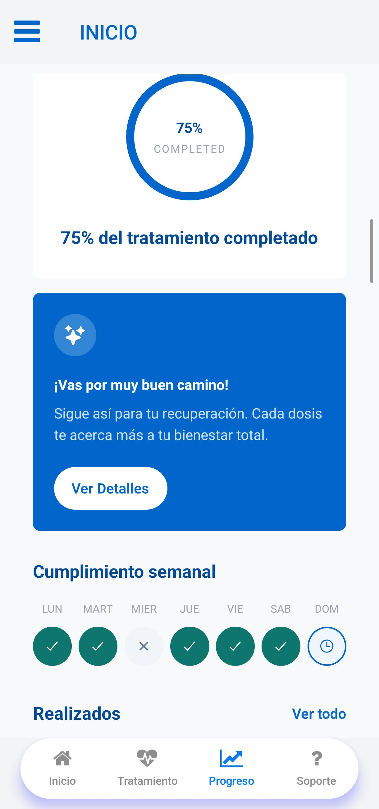

La app que te acompaña en cada paso de tu tratamiento. Nunca fue tan fácil cuidar de ti, recordar tus medicamentos y conectar con tu médico.

Olvídate de las alarmas confusas y los papeles perdidos. Nuestra plataforma organiza tu tratamiento médico para que tú solo te concentres en mejorar.
Recibe notificaciones exactas de cuándo y cómo tomar cada dosis. Configura tu medicación en segundos y deja que la app trabaje por ti.
Anota cómo te sientes diariamente. Llevar un diario de tu progreso ayuda a identificar patrones y a entender mejor tu evolución.
Genera informes claros de tu adherencia y síntomas con un clic. Compártelos con tu médico de confianza antes de tu próxima consulta.
"Clinix ha facilitado muchísimo el seguimiento de mis pacientes. La información es clara, rápida y muy organizada."
Dra. Michelle Joj
Médico General
"La plataforma ayuda muchísimo en el control clínico y mejora la comunicación entre médico y paciente."
Dra. Karent de León
Especialista en Medicina Interna
Mejora la adherencia terapéutica de tus pacientes. Recomienda Clinix y recibe reportes claros que te ayudarán a tomar mejores decisiones clínicas.
Conoce nuestro programa para médicosÚnete a miles de personas que ya están mejorando su calidad de vida con nuestra aplicación. Es fácil, seguro y totalmente gratuito.